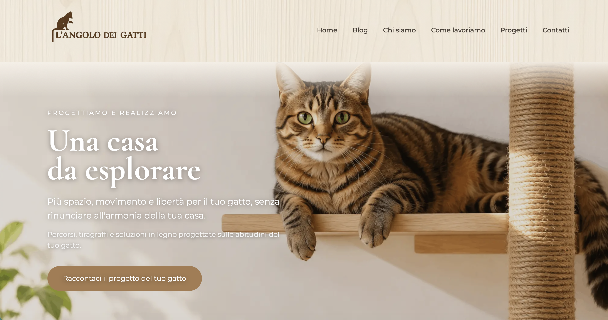

Una presenza semplice
Una pagina unica per presentare un'attività, un professionista, un servizio o un progetto. Tutto quello che serve, in un unico posto.
Progetti web e digitali
Progetti web e digitali per professionisti, piccole attività e realtà che vogliono costruire o migliorare la propria presenza online.
Scopri i progetti
Forse sì.
Ma non necessariamente quello che stai immaginando.
Per qualcuno è sufficiente una pagina chiara con servizi, contatti e informazioni essenziali.
Per altri serve un sito più completo, un sistema di prenotazione o un e-commerce.
Il punto non è avere un sito. È capire cosa deve fare per la tua attività.
Una pagina unica per presentare un'attività, un professionista, un servizio o un progetto. Tutto quello che serve, in un unico posto.
Più pagine per raccontare chi sei, cosa fai, i tuoi servizi, i tuoi progetti e come contattarti. Una struttura che può crescere insieme alla tua attività.
Se vuoi vendere prodotti online, possiamo valutare una soluzione e-commerce adatta al modo in cui lavori.
Un sito può diventare anche il punto di partenza per raccogliere richieste e appuntamenti. La soluzione dipende dal tipo di attività e da come vuoi gestire le prenotazioni.
Non esiste una piattaforma giusta per tutti.
Una soluzione flessibile per siti che hanno bisogno di contenuti, pagine e possibilità di gestione nel tempo.
Pensato soprattutto per chi vuole vendere online e avere una piattaforma e-commerce strutturata e gestibile.
Quando il progetto ha esigenze specifiche e una soluzione standard non è sufficiente.
Partiamo da quello che ti serve, non dalla piattaforma.
Un sito ben fatto è un punto di partenza, non necessariamente il punto di arrivo.
Non serve fare tutto subito. Si può partire da ciò che serve davvero e aggiungere il resto nel tempo.
Il sito è una parte del progetto.
Un sito può essere curato, veloce e funzionare perfettamente. Ma se le informazioni non sono aggiornate, se Google non riesce a leggerlo bene o se sui social comunichi qualcosa di completamente diverso, la tua presenza online perde coerenza.
Per questo considero insieme:
Non devono essere identici.
Devono però raccontare la stessa attività.
Realizzo il sito, lo pubblico e ti lascio una soluzione che puoi continuare a gestire autonomamente, quando possibile. Ti aiuto a partire nel modo giusto e poi puoi proseguire per conto tuo.
Aggiornamenti, modifiche, nuovi contenuti o piccoli interventi: in base a ciò che ti serve.
Il progetto può finire con la pubblicazione oppure continuare nel tempo.

SITO WEB · SEO · ANALYTICSDipende dal tipo di progetto, dal numero di pagine, dalle funzionalità necessarie e dalla soluzione scelta. Prima di parlare di costi è utile capire cosa deve fare il sito.
Dipende dalla complessità del progetto e da quanto materiale è già disponibile. Un sito semplice può essere realizzato in tempi più brevi, mentre progetti più articolati richiedono più lavoro.
No. Possiamo occuparci insieme della scelta, dell'acquisto e della configurazione degli strumenti necessari per pubblicare il sito.
Dipende dalla soluzione scelta. Se vuoi essere autonomo, questo aspetto viene considerato già nella scelta dello strumento e nella realizzazione del progetto. Se invece preferisci, posso continuare a occuparmi degli aggiornamenti e degli interventi di cui hai bisogno.
Mi occupo di progetti web e digitali con un approccio pratico.
Mi piace partire da un'esigenza concreta, capire cosa serve davvero e trasformarla in una soluzione semplice da utilizzare e da gestire.
Lavoro su siti web, e-commerce e strumenti per la presenza online, scegliendo di volta in volta la soluzione più adatta al progetto.
Il mio percorso professionale arriva anche da un altro mondo: da anni lavoro nell'amministrazione del personale e nel payroll.
È un'esperienza che mi ha insegnato precisione, organizzazione, attenzione ai dettagli e soprattutto a trovare soluzioni quando qualcosa non funziona come dovrebbe.
Nel digitale ho trovato il modo di unire questo approccio alla parte più creativa e progettuale.
Pochi fronzoli.
Un progetto alla volta.
Hai già un'attività ma non hai ancora un sito.
Hai un sito che non ti rappresenta più.
Vuoi iniziare a vendere online.
Stai pensando a WordPress o Shopify ma non sai quale strada prendere.
Oppure hai semplicemente bisogno di mettere ordine nella tua presenza online.
Raccontami cosa stai cercando.
Scrivimi